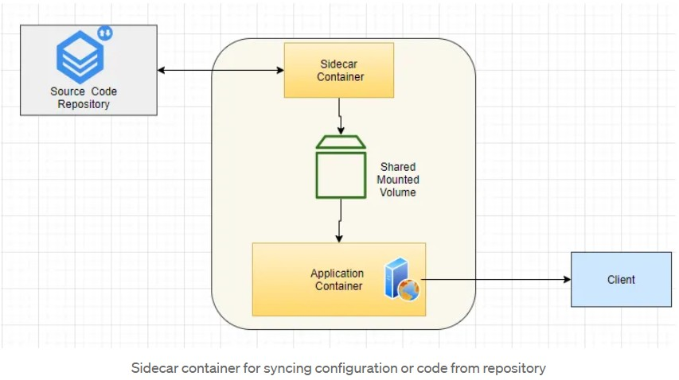
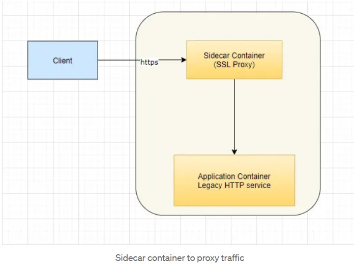
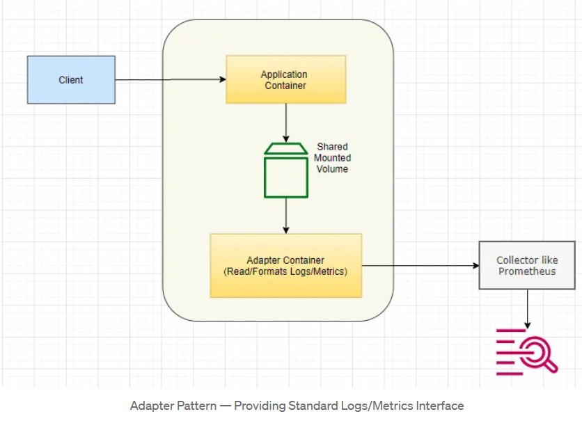
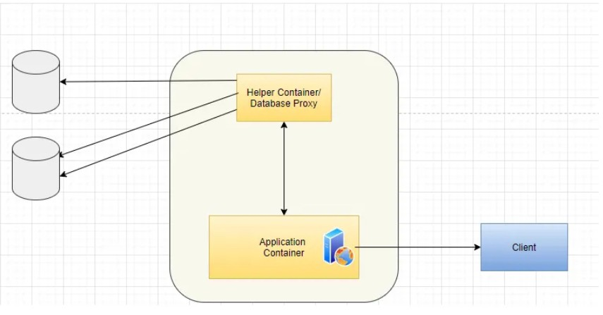
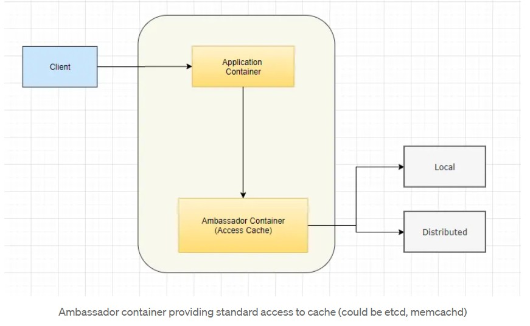

In Kubernetes, normally it is good practice to have only one application container per pod. But there are some valid cases to have helper containers along with main container.
There are three multi container patterns:
Sidecar pattern is about attaching helper container to main application container. Two containers co exist in a pod. One container is main application container that has core application/service logic. Second container is to help/enhance functionality of main container. Sometimes sidecar container is used to fix some environmental issues/limitations of existing legacy application. Both containers share common resources like file system and network.
Some common use cases of this pattern are:
not have HTTPS support and it may be required now by security team. Sidecar container can accept HTTPS traffic and terminate it at that level and forward request to application container on HTTP.
File syncing/Watching — Sidecar container can monitor some repository and pull down code or config changes. It’ll put those in shared volume that can be accessed by main application.
Standardizing logging formats.


Sidecar container for syncing configuration or code from repository
Sidecar container to proxy traffic Adapter PatternThe Adapter pattern inherits from the generic sidecar with specific purpose of presenting standard interface. Services in distributed systems maybe written in different languages or using different frameworks by different teams. This pattern is helpful when we need standard interface for some specific purpose like logs/metrics. We may need to expose logs/metrics in standard format to some aggregator for alerting/monitoring. But different applications may be exposing this information in different formats. Helper container can present unified interface.

Adapter Pattern — Providing Standard Logs/Metrics Interface
In above example, adapter container knows how to read application specific logs/metrics and format them to required format (expected by common tool like Prometheus)
Ambassador Pattern
The Ambassador pattern inherits from the generic sidecar pattern with specific purpose of presenting standard interface to outside services to be consumed by main application container.
Examples can be accessing cache, accessing some legacy database or service that requires some non-standard protocol or data format. This patterns relieves main application container from having intimate knowledge of consumed service by providing interface in standard or well known format. It can also be useful when some target service must be selected based on load etc.


Ambassador container providing standard access to cache (could be etcd, memcachd)
Considerations
One important consideration for most of these patterns is performance. Most of these are going to add some overhead to calls as a cost for obtaining standardization. Because of proximity of helper containers to main container, it should be acceptable to most applications but should be taken into account based on business needs.